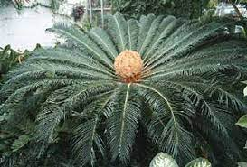

Triásico.
El período Triásico es una división de la escala temporal geológica que se extiende desde hace aproximadamente 251 millones de años hasta hace unos 201 millones de años atrás. Se considera el primer período de la era Mesozoica y sigue al período Pérmico. El nombre "Triásico" proviene de la tríada de sistemas de rocas que se encuentran en Alemania, donde se estableció por primera vez la secuencia geológica de este período. Durante el Triásico, la Tierra experimentó cambios significativos, incluida la aparición de los primeros dinosaurios, mamíferos, y otros grupos de organismos. Fue un período de diversificación y adaptación, donde muchas formas de vida se recuperaron de la extinción masiva al final del período Pérmico. Además, se produjeron cambios importantes en la configuración continental, con la formación de Pangea, el supercontinente que eventualmente se fragmentó en los continentes modernos.
El clima durante el Triásico variaba desde cálido y árido en algunas regiones hasta más templado y húmedo en otras. Hubo áreas desérticas extensas y regiones costeras con lagos y ríos. La vida marina estaba dominada por reptiles marinos como los ictiosaurios y los placodontes, mientras que en tierra, los reptiles terrestres ocupaban diversos nichos ecológicos. El Triásico finalizó con otro evento de extinción masiva, al final del período, que marcó el límite entre el Triásico y el Jurásico. Este evento, aunque no tan devastador como la extinción masiva al final del Pérmico, tuvo un impacto significativo en la vida en la Tierra y preparó el escenario para la evolución y la diversificación de los dinosaurios en el siguiente período, el Jurásico.
Carnivoros:
Durante el periodo Triásico, los carnívoros eran principalmente reptiles primitivos que se adaptaron para cazar y alimentarse de otros animales. Estos primeros carnívoros desempeñaron un papel importante en los ecosistemas terrestres, siendo depredadores clave en sus hábitats. Uno de los grupos principales de carnívoros del Triásico fueron los arcosaurios, un grupo diverso que incluía a los antepasados de los dinosaurios y los cocodrilos. Algunos de los arcosaurios carnívoros del Triásico temprano tenían características primitivas, como mandíbulas largas y dientes afilados, que les permitían cazar presas más pequeñas.
Otro grupo de carnívoros del Triásico fueron los cinodontes, un grupo de reptiles mamiferoides que estaban más estrechamente relacionados con los mamíferos que con los reptiles modernos. Estos carnívoros tenían cráneos más avanzados y dientes especializados para desgarrar la carne de sus presas. Además de los arcosaurios y los cinodontes, también existían otros grupos de carnívoros menos conocidos, como los terápsidos, que incluían a los antepasados de los mamíferos modernos. Estos carnívoros desempeñaron un papel importante en la cadena alimentaria del Triásico, cazando y controlando las poblaciones de otros animales.
Eoraptor
-
Eoraptor fue un pequeño dinosaurio carnívoro que vivió durante el período Triásico Superior en lo que ahora es Argentina.
- Longitud: Aproximadamente 1 metro
- Peso: Entre 10 y 15 kilogramos
Herrerasaurus
-
Herrerasaurus fue uno de los primeros dinosaurios carnívoros conocidos y habitó en lo que hoy es Argentina durante el Triásico.
- Longitud: Alrededor de 4 metros
- Peso: Cerca de 200 kilogramos

Postosuchus
-
Postosuchus fue un arcosaurio carnívoro que vivió durante el Triásico Superior en lo que hoy es América del Norte.
- Longitud: Aproximadamente 5 metros
- Peso: Entre 300 y 400 kilogramos

Liliensternus
-
Liliensternus era un dinosaurio terópodo carnívoro que habitó en lo que hoy es Alemania durante el Triásico.
- Longitud: Alrededor de 5 metros
- Peso: Cerca de 200 kilogramos
Procompsognathus
-
Procompsognathus era un pequeño dinosaurio carnívoro que vivió en Europa durante el Triásico.
- Longitud: Aproximadamente 1 metro
- Peso: Alrededor de 2 kilogramos
Cynognathus
-
Cynognathus era un cinodonte carnívoro que vivió durante el Triásico en lo que hoy es Sudáfrica.
- Longitud: Cerca de 1.5 metros
- Peso: En el rango de 20 a 30 kilogramos
Hervíboros:
Los dinosaurios herbívoros del periodo Triásico fueron algunos de los primeros grandes vertebrados terrestres. Durante esta época, los continentes estaban unidos en el supercontinente Pangea y el clima era más árido que en épocas posteriores. Los dinosaurios herbívoros del Triásico se adaptaron a una variedad de ambientes, desde áreas desérticas hasta zonas boscosas. Uno de los grupos principales de dinosaurios herbívoros del Triásico fue el de los sauropodomorfos primitivos. Estos dinosaurios, como el Plateosaurus, eran cuadrúpedos y tenían cuerpos relativamente pequeños en comparación con sus descendientes gigantes del Jurásico y el Cretácico. Se alimentaban principalmente de plantas bajas y arbustos.
Otro grupo importante de herbívoros del Triásico fueron los prosaurópodos. Estos dinosaurios también eran cuadrúpedos y tenían cuellos y colas largas. Se cree que se alimentaban de helechos y otras plantas de bajo crecimiento. Además de los sauropodomorfos y los prosaurópodos, también existían otros grupos de dinosaurios herbívoros más pequeños y menos conocidos, como los ornitisquios primitivos. Estos dinosaurios tenían una variedad de formas y tamaños, y algunos de ellos pueden haber sido bípedos.
Plateosaurus
-
Plateosaurus fue un dinosaurio saurópodo herbívoro que vivió durante el período Triásico Superior en Europa.
- Longitud: Alrededor de 8 metros
- Peso: Entre 1,000 y 4,000 kilogramos
Massospondylus
-
Massospondylus era un dinosaurio saurópodo herbívoro que habitaba en lo que hoy es África durante el Triásico.
- Longitud: Aproximadamente 4 metros
- Peso: Cerca de 500 kilogramos
Placerias
-
Placerias era un dicinodonte herbívoro que vivió durante el Triásico en lo que hoy es América del Norte.
- Longitud: Alrededor de 3 metros
- Peso: Entre 1,000 y 2,000 kilogramos
lesothosaurus
-
Lesothosaurus era un pequeño dinosaurio ornitisquio herbívoro que vivió en lo que hoy es África durante el Triásico.
- Longitud: Aproximadamente 1 metro
- Peso: Alrededor de 10 kilogramos
Mussaurus
-
Mussaurus era un dinosaurio saurópodo herbívoro que vivió en lo que hoy es Argentina durante el Triásico.
- Longitud: Cerca de 3 metros
- Peso: Aproximadamente 100 kilogramos
Kulindradromeus
-
Kulindadromeus era un pequeño dinosaurio ornitisquio herbívoro que habitaba en lo que hoy es Siberia durante el Triásico.
- Longitud: Cerca de 1 metro
- Peso: Alrededor de 2 kilogramos
Flora:
Durante el periodo Triásico, la flora experimentó una evolución significativa en respuesta a los cambios ambientales y climáticos. Este periodo fue testigo de la transición de los paisajes dominados por plantas primitivas como los helechos y los equisetos hacia ecosistemas más complejos con la aparición de las primeras plantas con semillas. En el Triásico temprano, las plantas dominantes incluían helechos, musgos y equisetos, que colonizaban áreas húmedas y pantanosas. Estas plantas proporcionaban el hábitat y el alimento para una variedad de organismos terrestres, incluidos los primeros vertebrados terrestres. Con el paso del tiempo, aparecieron nuevas formas de vida vegetal, como los ginkgos y las cícadas, que comenzaron a dominar los paisajes terrestres. Estas plantas con semillas desarrollaron adaptaciones que les permitieron prosperar en ambientes más secos y áridos, lo que reflejaba los cambios en el clima y la geografía durante el periodo Triásico.
Las cícadas, por ejemplo, eran plantas leñosas con hojas similares a las palmas y producían conos como estructuras reproductivas. Los ginkgos también eran árboles con hojas en forma de abanico y se cree que eran comunes en áreas boscosas durante el Triásico. Además de las cícadas y los ginkgos, otras plantas con semillas, como las coníferas primitivas, también comenzaron a diversificarse durante este periodo. Estas plantas jugaron un papel importante en la evolución de los ecosistemas terrestres, proporcionando alimento y refugio para una variedad de animales terrestres, incluidos los primeros dinosaurios herbívoros. En resumen, la flora del periodo Triásico fue dominada por una variedad de plantas primitivas, pero también marcó el comienzo de la era de las plantas con semillas, que eventualmente se convertirían en la flora dominante en los ecosistemas terrestres en épocas posteriores.
Cycadeoidales
-
Cycadeoidales es un grupo de plantas similares a las cícadas que prosperaron durante el período Triásico.
- Altura: Varía entre especies, generalmente de 1 a 5 metros.
- Descripción: Plantas con hojas palmadas y troncos robustos, similares a las palmeras.
Ginkgoales
-
Ginkgoales incluye especies como el Ginkgo biloba y fue un grupo común de plantas durante el Triásico.
- Altura: Pueden alcanzar hasta 35 metros en especies modernas
- Descripción: Árboles caducifolios con hojas en forma de abanico y corteza rugosa.
Bennettitales
-
Bennettitales fue un grupo diverso de plantas que prosperaron durante el Triásico y declinaron en el Jurásico.
- Altura: Varía según la especie, desde pequeñas herbáceas hasta árboles de varios metros.
- Descripción: Plantas con estructuras reproductivas similares a las flores y hojas a menudo lanceoladas.
coniferas
-
Las coníferas, como los pinos y las secuoyas, estaban presentes durante el Triásico y aún existen hoy en día.
- Altura: Varía ampliamente entre especies, desde arbustos hasta árboles gigantes de más de 100 metros.
- Descripción: Plantas con hojas en forma de aguja y conos reproductivos
Glossopteris
-
Glossopteris fue un género de helechos arborescentes que dominaron las regiones del Gondwana durante el Triásico.
- Altura: Alcanzaba alturas de hasta 15 metros.
- escripción: Helechos con hojas grandes y coriáceas, similares a las hojas de las palmas.

Cycadophyta
-
Cycadophyta incluye plantas como las cycadas que eran comunes durante el Triásico y aún existen en la actualidad.
- Altura: Varía, pero muchas especies son de tamaño arbustivo o de pequeños árboles.
- Descripción: Plantas con hojas en forma de plumas y troncos robustos, similares a las palmeras.